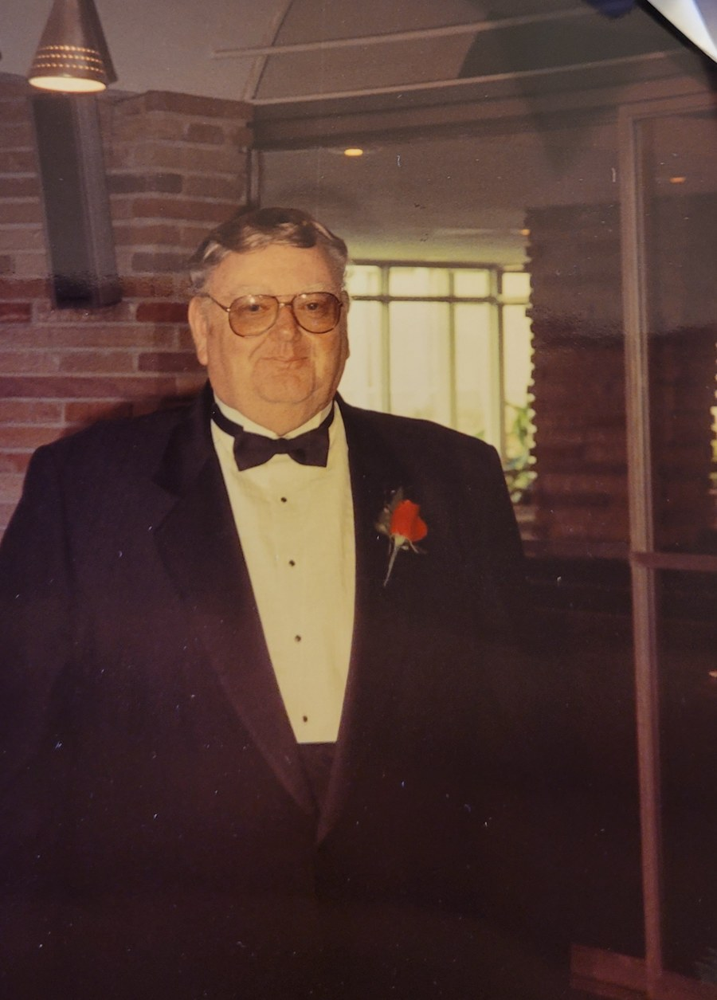
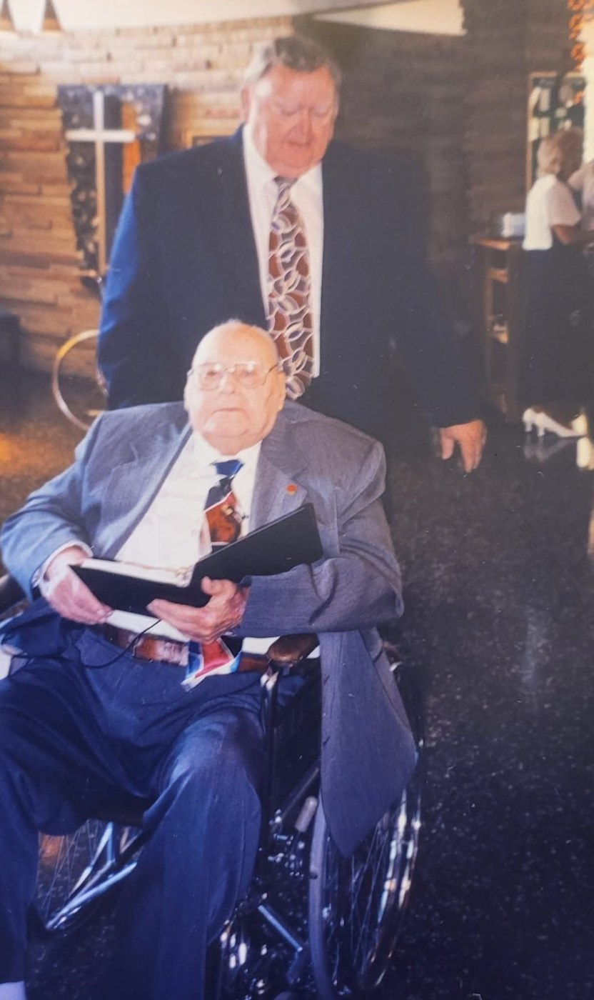
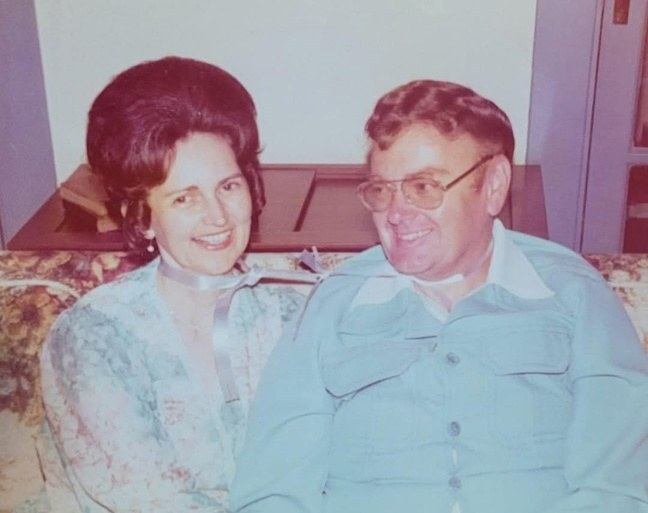

James Thomas "Tom" McGregor
22 December 1937 – 2022
Quick Facts
Immediate Family
Parents
Rev. James William McGregor SUPPORTED; c. 22 January 1908, Benton, Kentucky – 1999, from the family tree UNPROVEDMarye Elizabeth McGregor, née Hooper SUPPORTED; c. 21 February 1910, Puryear, Tennessee – 1994, from the family tree UNPROVED
"Mamaw and Papaw" to the grandchildren
Children
No children of his own; stepfather of Susan and Tricia DOCUMENTEDStepdaughters, raised as his own from 1976 FAMILY ACCOUNT
When Tom married Ruth, he did not just take a wife: he stepped up to become a father to Susan and Tricia, choosing to love and protect them as if they were his very own blood. Their birth father was Lawrence Richard Shamblen (1932–1968).
Susan Ruth Shamblen (b. 25 November 1960, Cincinnati), stepdaughter FAMILY ACCOUNT
Tricia Marie Shamblen (b. 22 April 1965, Cincinnati; d. 2016), stepdaughter FAMILY ACCOUNT
Siblings
- William Clarence "Bill" McGregor, b. 14 April 1936, Benton, Kentucky, d. 2 June 2021, Harrison, Ohio DOCUMENTED
- Wayne Martin McGregor, lived in Germany FAMILY ACCOUNT
Tom, Bill, and Wayne were all sons of James W. McGregor and Marye Hooper, as named in Bill's obituary.
On Family Tree Sites
Couple Folder
Life Timeline
1937 · age 0
Born 22 December 1937 SUPPORTED, Benton, Marshall County, Kentucky FAMILY ACCOUNT
Childhood
Raised in Kentucky with his brothers Bill and Wayne FAMILY ACCOUNT
Working years
Worked for the U.S. Post Office FAMILY ACCOUNT
1976 · age 38
Married Ruth Laverne McKinney, 10 July 1976, in the garden at Kenwood Baptist Church, Cincinnati; became stepfather to her daughters Susan and Tricia FAMILY ACCOUNT
1976 · age 38
Moved with Ruth and the girls to a house in Madeira, Ohio, that same month FAMILY ACCOUNT
2018 · age 80
Widowed; Ruth died at home in Madeira, 7 July 2018 FAMILY ACCOUNT
2022 · age 84
Died, between 1 February and 11 May 2022, Cincinnati area, Ohio, after a hospital stay and then care at home as his health failed SUPPORTED
Life Story
James Thomas McGregor, known as Tom, was born 22 December 1937 in Benton, Marshall County, Kentucky, the son of Rev. James William McGregor and Marye Elizabeth Hooper SUPPORTED, "Mamaw and Papaw" to the grandchildren. He was raised in Kentucky FAMILY ACCOUNT with his brothers William Clarence, called Bill, and Wayne Martin DOCUMENTED. Wayne later lived in Germany FAMILY ACCOUNT.
His parents, proud Kentuckians, later settled in Harrison, Ohio FAMILY ACCOUNT; family trees say they are buried there UNPROVED. For a time they lived in a renovated one-room schoolhouse with a garden of about a quarter acre, and the grandchildren worked that garden, picked sweet berries, and pulled peanuts straight out of the ground FAMILY ACCOUNT. The family visited Bill and his son in Harrison all the time FAMILY ACCOUNT.
Tom worked at the Post Office, and he told stories of his walks and routes FAMILY ACCOUNT. Every Sunday he and Ruth were at Kenwood Baptist Church, where Tom counted the money after church with whoever else was on counting duty. Among his favorite church friends were Jim and Pat Crabtree, Tennesseans from the Morgan County area, who helped the family over the years FAMILY ACCOUNT. Ruth was close friends with Edith Lindner, and Ruth and Tom went to the Lindners' parties often; Tom told of a dinner party at the Lindners' house with President Bush, and said it was not the only president, senator or congressman they met there FAMILY ACCOUNT.
Tom married Ruth Laverne McKinney on 10 July 1976 in the garden at Kenwood Baptist Church FAMILY ACCOUNT. Ruth had been widowed in 1968 with two young daughters. When Tom married Ruth, he did not just take a wife: he stepped up to become a father to Susan and Tricia. He loved Ruth completely, and he chose to love and protect her daughters as if they were his very own blood FAMILY ACCOUNT. That same month the family moved to a house in Madeira.
When the next generation arrived, Tom stepped into the grandfather's role with the same open arms, the steady, protective patriarch the family looked up to. He always said he was too young to be called Grandpa; he wasn't a grandpa, he just married a grandma. The grandkids called him Tommy FAMILY ACCOUNT. Later in life he worked on his family tree on Geni FAMILY ACCOUNT. He was a steady presence in the family for the rest of Ruth's life, and after her death in 2018 he remained close to the family.
In early 2022 his health failed. He was in the hospital on 1 February 2022 SUPPORTED, and afterward he was cared for at home by family until his final breath FAMILY ACCOUNT. He was gone by 11 May 2022 SUPPORTED. He was cremated, and the family holds his ashes FAMILY ACCOUNT. No obituary has been found, and his exact death date is not yet proved — it is carried here only as the February to May 2022 window the dated family records support UNPROVED.
Photo Gallery




Sources and Evidence
- Geni profile for James Thomas McGregor, read 2026-10-10 — birth 22 December 1937, Benton, Kentucky; parents James William McGregor and Marye Elizabeth Hooper; brothers William Clarence and Wayne Martin SUPPORTED
- William C. McGregor obituary, Brater Winter Funeral Home, Harrison, Ohio, 2 June 2021 — names his surviving brothers James Thomas McGregor and Wayne Martin McGregor, sons of James W. and Marye (Hooper) McGregor DOCUMENTED
- Family records bounding Tom's death: hospital post 1 February 2022 and remembrance post 11 May 2022 SUPPORTED
- Family tree on Ancestry (Shamblen/McKinney Family Tree; no sources attached): marriage to Ruth 10 July 1976; birth 22 December 1937, Benton, Kentucky; died 2022 FAMILY ACCOUNT
- Ohio voter registration: James T. McGregor, born 22 December 1937, Madeira, Hamilton County SUPPORTED
- Will of James Thomas McGregor, 2020 (private family papers): a resident of Hamilton County, Ohio; states he had no children of his own and names his stepdaughter DOCUMENTED
Grades: DOCUMENTED an original record says it · SUPPORTED several records point to it · FAMILY ACCOUNT the family's own telling · UNPROVED a lead, not proved.
Research Notes and Open Questions
- Exact death date: not yet proved; carried as between 1 February and 11 May 2022. Next steps: the Hamilton County Probate Court estate record for 2022, then an Ohio death certificate.
- No obituary found in free sources; the family may not have published one.
- Find a record of the 1976 marriage to Ruth (Hamilton County Probate Court marriage index).
- Was Tom married before he married Ruth? No record found yet.
DNA
No DNA matches linked yet.